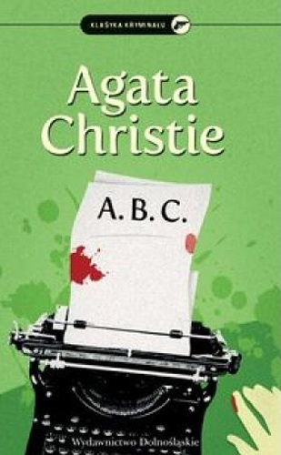

Powieści z Herkulesem Poirotem
- 1920 Tajemnicza historia w Styles (The Mysterious Affair at Styles)
- 1923 Morderstwo na polu golfowym (Murder on the Links)
- 1926 Zabójstwo Rogera Ackroyda (The Murder of Roger Ackroyd)
- 1927 Wielka czwórka (The Big Four)
- 1928 Tajemnica Błękitnego Expressu (The Mystery of the Blue Train)
- 1932 Samotny Dom (Peril at End House)
- 1933 Śmierć lorda Edgware’a (Lord Edgware dies)
- 1934 Morderstwo w Orient Expressie (Murder on the Orient Express)
- 1934 Czarna kawa (Black coffee) (pierwotnie sztuka teatralna)
- 1935 Tragedia w trzech aktach (Three Act Tragedy)
- 1935 Śmierć w chmurach (Death in the Clouds)
- 1936 A.B.C. (The ABC Murders)
- 1936 Morderstwo w Mezopotamii (Murder in Mesopotamia)
- 1936 Karty na stół (Cards on the Table)
- 1937 Śmierć na Nilu Death on the Nile)
- 1937 Niemy świadek (Dumb Witness)
- 1938 Rendez-vous ze śmiercią (Appointment with Death)
- 1939 Boże Narodzenie Herkulesa Poirota (Hercule Poirot's Christmas)
- 1941 Pierwsze, drugie... zapnij mi obuwie (One, Two, Buckle my Shoe)
- 1940 Zerwane zaręczyny (Sad Cypress)
- 1941 Zło, które żyje pod słońcem (Evil under the Sun)
- 1942 Pięć małych świnek (Five little pigs)
- 1946 Niedziela na wsi (The Hollow)
- 1948 Pora przypływu (There is a Tide) (także znana jako Taken at the Flood)
- 1952 Pani McGinty nie żyje (Mrs McGinty's dead)
- 1953 Po pogrzebie (After the Funeral)
- 1955 Entliczek pentliczek (Hickory Dickory Dock)
- 1956 Zbrodnia na festynie (Dead Man’s Folly)
- 1959 Kot wśród gołębi (Cat Among the Pigeons)
- 1963 Przyjdź i zgiń (The Clocks)
- 1966 Trzecia lokatorka (Third Girl)
- 1969 Wigilia Wszystkich Świętych (Hallowe'en Party)
- 1972 Słonie mają dobrą pamięć (Elephants can remember)
- 1976 Kurtyna (Curtain)
- 2014 Inicjały zbrodni (The Monogram Murders) – powieść autorstwa Sophie Hannah, autoryzowana przez rodzinę i wydawców Agathy Christie

Opowiadania z Herkulesem Poirotem
- 1924
- Poirot prowadzi śledztwo (Poirot Investigates)
- Gwiazda Zachodu (The Adventure of the Western Star)
- Tragedia w Marsdon Manor (The Tragedy at Marsdon Manor)
- Perypetie z tanim mieszkaniem (The Adventure of the Cheap Flat)
- Tajemnica Hunter's Lodge (The Mystery of Hunter's Lodge)
- Kradzież obligacji za milion dolarów (The Million Dollar Bond Robbery)
- Tajemnica egipskiego grobowca (The Adventure of the Egyptian Tomb)
- Kradzież w hotelu Grand Metropolitan (The Jewel Robbery at the Grand Metropolitan)
- Porwanie premiera (The Kidnapped Prime Minister)
- Zniknięcie pana Davenheima (The Disappearance of Mr Davenheim)
- Sprawa włoskiego arystokraty (The Adventure of the Italian Nobleman)
- Zaginiony testament (The Case of the Missing Will)
- 1936
- Poirot and the Regatta Mystery
- 1937
- Morderstwo w zaułku (Murder in the Mews)
- Niewiarygodna kradzież (The Incredible Theft)
- Lustro nieboszczyka (Dead Man’s Mirror)
- Trójkąt na Rodos (Triangle at Rhodes)
- 1947 Dwanaście prac Herkulesa (The Labours of Hercules)
- Lew z Nemei (The Nemean Lion)
- Hydra lernejska (The Lernaean Hydra)
- Łania ceryntyjska (The Arcadian Deer)
- Dzik z Erymantu (The Erymanthian Boar)
- Stajnie Augiasza (The Augean Stables)
- Ptaki stymfalijskie (The Stymphalean Birds)
- Byk kreteński (The Cretan Bull)
- Klacze Diomedesa (The Horses of Diomedes)
- Pas Hipolity (The Girdle of Hyppolita)
- Stado Gerionesa (The Flock of Geryon)
- Jabłka Hesperyd (The Apples of Hesperides)
- Pojmanie Cerbera (The Capture of Cerberus)
- 1960
- Tajemnica gwiazdkowego puddingu (The Adventure of the Christmas Pudding)
- Zagadka hiszpańskiej skrzyni (The Mystery of the Spanish Chest)
- Popychadło (The Under Dog)
- Dwadzieścia cztery kosy (Four and Twenty Blackbirds)
- Sen (The Dream)
- 1974
- Wczesne sprawy Poirota (Poirot's Early Cases)
- Wypadki na Balu Zwycięstwa (The Affair at the Victory Ball)
- Przygoda kucharki z Clapham (The Adventure of the Clapham Cook)
- Zagadka z Kornwalii (The Cornish Mystery)
- Przygoda Johnniego Waverly (The Adventure of Johnnie Waverly)
- Podwójny trop (The Double Clue)
- Król Trefl (The King of Clubs)
- Dziedzictwo Lemesurierów (The Lemesurier Inheritance)
- Zaginiona kopalnia (The Lost Mine)
- Ekspres do Plymouth (The Plymouth Express)
- Bombonierka (The Chocolate Box)
- Projekt okrętu podwodnego (The Submarine Plans)
- Mieszkanie na trzecim piętrze (The Third Floor Flat)
- Podwójna wina (Double Sin)
- Tajemnica Market Basing (The Market Basing Mystery)
- Gniazdo os (Wasps' Nest)
- Dama z woalką (The Veiled Lady)
- Na pełnym morzu (Problem at Sea)
- Jak rosną kwiaty w pani ogródku? (How Does Your Garden Grow?)
- 1991
- Detektywi w służbie miłości (Problem at Pollensa Bay and Other Stories)
- Drugi gong (The Second Gong)
- Żółty irys (Yellow Iris)
- 1997
- Dopóki starczy światła (While the Lights Last and Other Stories)
- Bożonarodzeniowa przygoda (Christmas Adventure)
- Tajemnica bagdadzkiego kufra (The Mystery of the Baghdad Chest)
- 2009
- Pojmanie Cerbera (The Capture of Cerberus)
- 2009
- The Incident of the Dog's Ball
- 2014
- Hercule Poirot and the Greenshore Folly